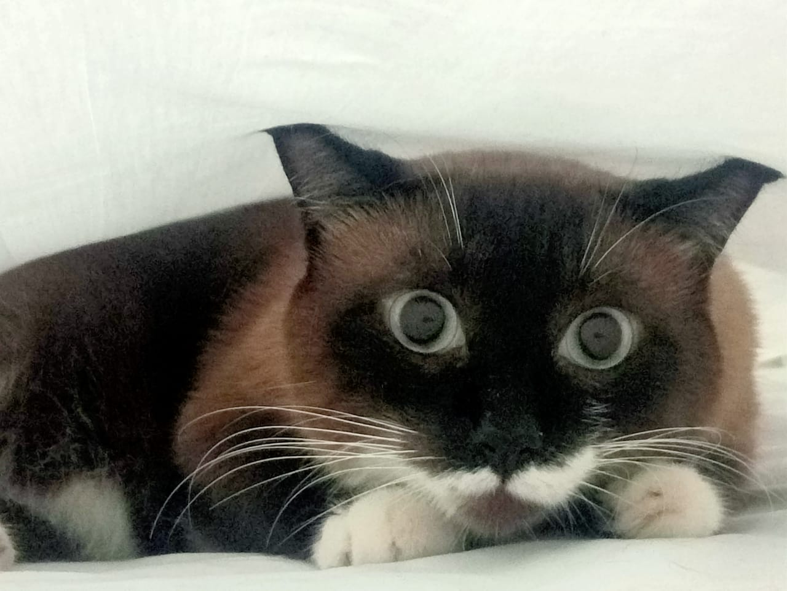

Inicio
Razas
Alimentación
Salud y Cuidado
Enfermedades
Tu gato en Internet 😸
Esta es una página dedicada a la información general de los tipos de gatos,
así mismo al tipo de cuidado y alimentacion que se le tiene que proporcionar a tu mascota.
A continuación dejo una imagen ilustrativa de mi gato :]
